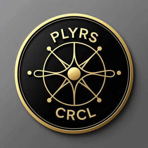

Trade Mark Journal No.2025/035 29 August 2025
UK00004240040 27 July 2025 (35,41,45)

- Class 35
- Business management of sports personalities; Business consultancy; Professional business consultancy services; Professional business consultancy; Consultancy and advisory services in the field of business strategy; Business consultancy and advisory services; Business advisory and consultancy services; Business management and consultancy; Agency services for promoting sports personalities; Business management of sports people; Promotional management for sports personalities; Corporate management consultancy; Commercial consultancy services; Commercial consultancy; Personal management consultancy services.
- Class 41
- Sports entertainment services; Sports education services; Sports and fitness services; Sports coaching services; Sports club services; Sports information services; Sports instruction services; Sports camp services; Sporting services; Education services relating to sports; Education, entertainment and sport services; Educational services relating to sports; Services for the organisation of sports events; Sporting education services; Entertainment services relating to sport; Coaching services for sporting activities; Instruction services relating to sports; Entertainment services; Sport camp services; Camp services (Sport -); Handicapping services for sporting events; Services for the provision of sporting facilities; Recreational services; Recreation services; Entertainment club services; Club entertainment services; Club services [entertainment]; Providing sports facilities; Providing of sports facilities; Entertainment services relating to sporting events; Providing facilities for sports events; Entertainment services in the nature of sporting events; Providing sports facilities for skiing; Sports activities; Provision of sports facilities; Sports facilities (Provision of -); Provision of facilities for sports; Provision of club entertainment services; Leisure services; Football pools services; Providing sports facilities for archery; Education, entertainment and sports; Educational and training services relating to sport; E-sports services; Providing facilities for sports recreation; Entertainment services relating to esports; Entertainment services relating to competitions; Hire of sports facilities; Sports facilities (Hire of -); Ticket reservation and booking services for education, entertainment and sports activities and events; Booking of sports personalities for events (services of a promoter); Entertainment services in the nature of competitions; Sporting results services; Providing facilities for sports tournaments; Organisation of entertainment services; Providing facilities for sporting events, sports and athletic competitions and awards programmes; Physical-education services; Radio entertainment services; Entertainment services in the nature of a wrestling club; Television entertainment services; Corporate entertainment services; Providing sports training facilities; Music entertainment services; Entertainment services for children; Club education services; Gaming services; Consultancy services in the field of entertainment; Popular entertainment services; Recreation and training services; Organising of sports and sports events; Entertainment agency services; Services for the organisation of football events; Entertainment services in the nature of skating events; Online entertainment services; Recreational services relating to skiing; Social club services for entertainment purposes; Providing online newsletters in the fields of sports entertainment; Hospitality services (entertainment); Provision of facilities for winter sports; Motoring school services; Services for providing recreational facilities; Education services; Provision of entertainment services for children; Coaching services; Services for the provision of recreational facilities; Children's entertainment services; Ticket procurement services for sporting events; Education services relating to quality services; Booking of sports facilities; Video entertainment services; Provision of ice sports facilities; Tv entertainment services; Recreational services relating to skating; Photography services; Entertainment services relating to the playing of golf; Information services relating to sport; Fan club services (entertainment); Sports training; Training in sports; Providing sports news; Football academy services; Health club services; Entertainment services in the nature of contests; Instructional services for skiing; Operation of sports facilities; Fitness club services; Sports coaching; Organisation of sports competitions; Business training consultancy services; Organisation of sports tuition; Coaching in the field of sports; Training consultancy; Organisation of sports events in the field of football; Organising of sports competitions and sports events; Organising of sports events and of sports competitions; Organisation of sports tournaments; Management training consultancy services; Educational consultancy; Competitions (Organization of sports -); Organization of sports competitions; Professional consultancy relating to education; Educational consultancy services; Sports and fitness; Organisation of sporting competitions and sports events; Education and training consultancy; Training services relating to management consultancy; Consultancy services relating to engineering education; Consultancy services relating to training; Competitions (Organising of sports -); Sports competitions (Organising of -); Organising of sports competitions; Literary agency services; Entertainment ticket agency services; Providing online entertainment in the nature of fantasy sports leagues; Hosting of fantasy sports leagues; Training of sports players; Providing sports facilities for figure skating championships; Organisation of sports activities for summer camps; Arrangement of sports competitions; Sports refereeing; Operation of sports camps; Organization of competitions [education or entertainment]; Competitions (Organization of -) [education or entertainment]; Organization of competitions for education or entertainment; Sports officiating; On-line ticket agency services for entertainment purposes; Booking agencies for entertainment; Rental of sports equipment; Rental services relating to equipment and facilities for education, entertainment, sports and culture; Rental of sports or exercise equipment; Providing sports facilities for playing polo; Instruction in sports; Rental of sports equipment and facilities; Arranging of sports competitions; Tuition in sports; Sports tuition; Rental of sports grounds; Organization of electronic sports competitions; Providing sports entertainment via a website; Health and fitness club services; Health club [fitness] services; Providing sports facilities for speed skating championships.
- Class 45
- Legal consultancy relating to television advertising, television entertainment and sports; Concierge services.
Zaza Oriola